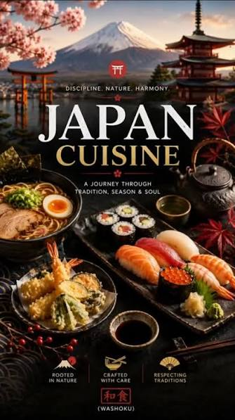

FoodFusion valorises the Japanese healthy food and beverages, and it makes the population look younger because of its quality. These dishes are appreciated globally, and it is tasty, lighter, and there is a variety of fresh seafood.
Sushi is very famous for its unique savour, and it gives us enthusiasm to discover more Japanese dishes on the table
The Japanese focus on the quality of food, and they are the ones who prefer steamed food almost every time. There are healing properties in Japanese food because they also add cordyceps mushrooms for preventing diseases in their food. This is the main reason why Japanese women look younger.

Values
The Japanese use their traditional ingredient for enhancing the quality of the FoodFusion by adding them to prepare dishes. The Japanese focus on improving their food, and what matters the most is the customer experience.
The chef strives to bring something of quality for the culinary lover, and also feels proud of their innovation of new food and beverages.
Team
The chef prepares their secret sauce and applies it to FoodFusion for having great food that is being appreciated. The team collaborated to get prestige in what they achieved.
The key to having successful dishes well prepared relies on the hand of the chef, and it is precious for FoodFusion.